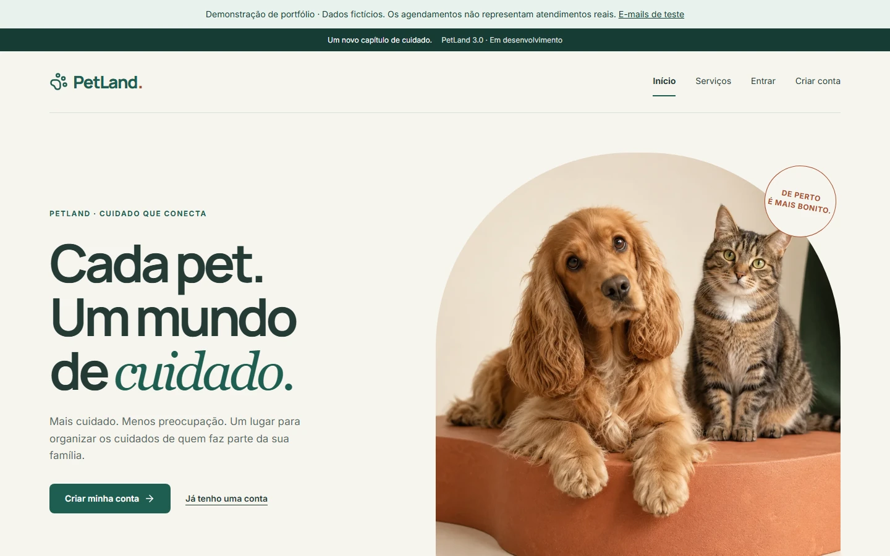
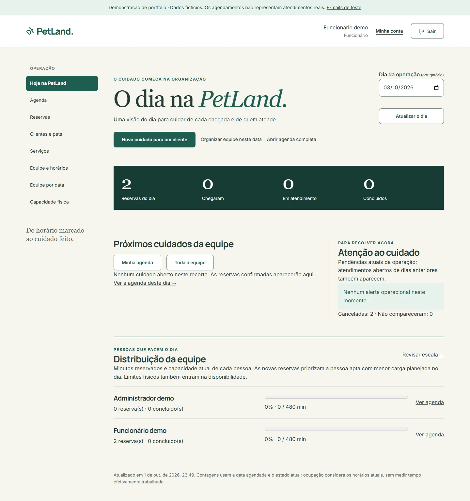
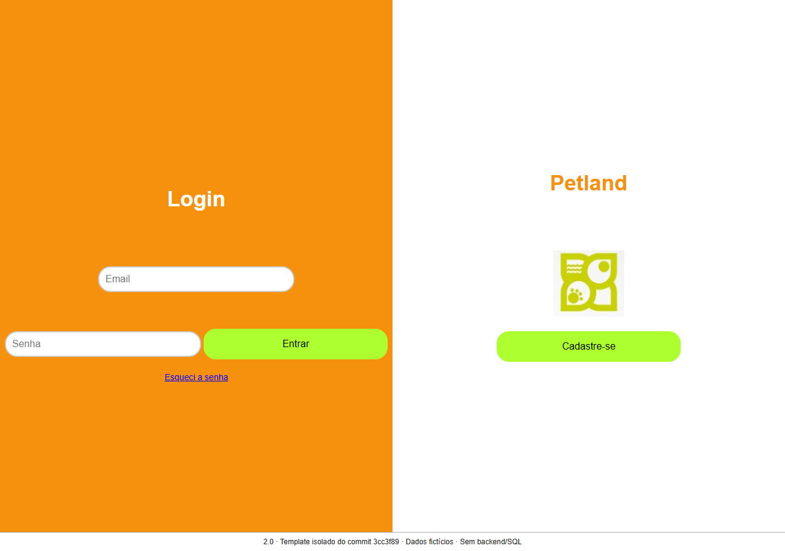
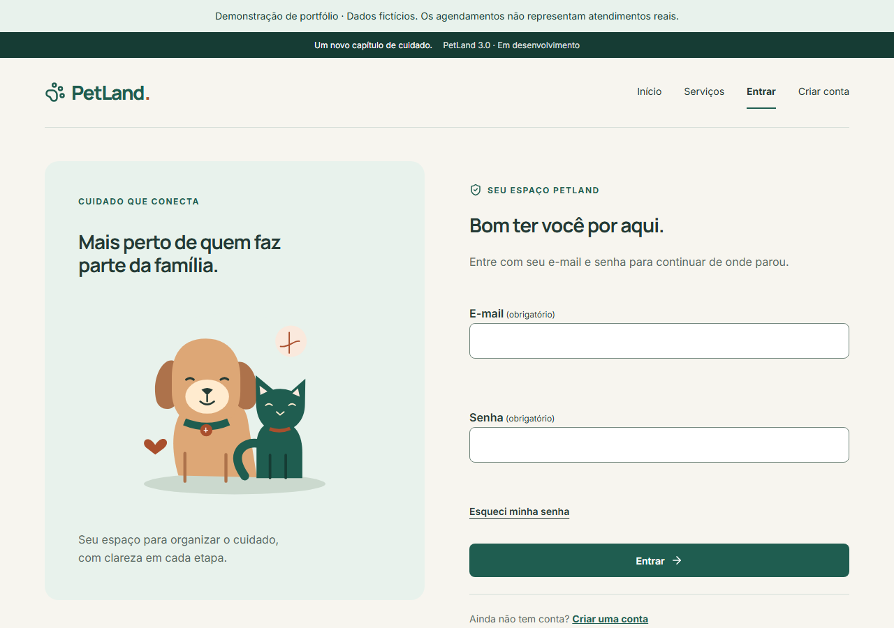
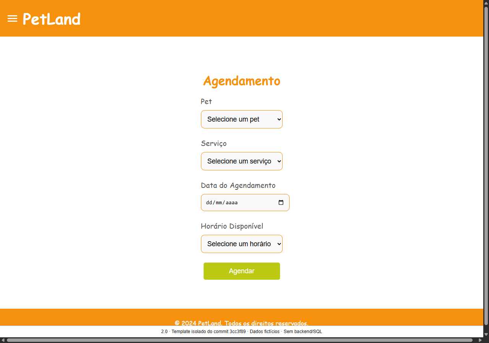
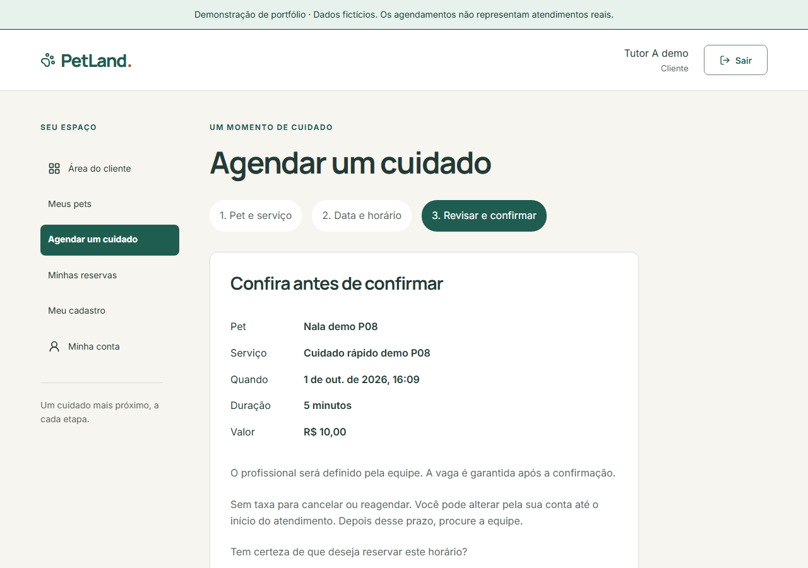

O ponto de partida
O 2.0 expressava a intenção de autoatendimento, com rotas, SQL e regras misturados e disponibilidade por contagem de horários. O diagnóstico não comprovava propriedade e reserva transacional.
Arquivo histórico: vídeo e evidências P08, anteriores à evolução operacional final. Abrir o case final.
Um CRM de pet shop que conecta cliente, equipe e administração. Reserva confirmada, atendimento registrado e histórico preservado em uma única jornada.
3.0.0-rc.1 · Candidata para revisãoDemonstração local · Dados fictíciosAceite final e revisão humana com leitor de tela pendentes. Publicação externa permanece adiada pela decisão D10.

A revisão funcional compara tutor, equipe, gestão e recepção com contratos e testes. O incremento autorizado transforma lacunas em operação: escala coletiva por data, recursos físicos, transferência independente, contexto crítico, comunicação e indicadores por responsável final.
Loja aberta, escala da data, pessoa apta, duração, recursos físicos e proteção contra conflitos.
Alergias confirmadas, histórico anterior, chegada, execução e transferência com autoria.
Pendências, distribuição da equipe e duração real, com limites e atribuição explícitos.
Matriz de dores e prioridades · Regras da evolução operacional · Origem da capa
Próximos cuidados, chegadas, ocupação vencida e distribuição aparecem juntos. O gestor pode reduzir uma única data, conferir reservas afetadas e transferir cuidados sem apagar o que foi combinado. Concluídos e duração real ajudam a revisar a operação, sem ranking automático.

O 2.0 expressava a intenção de autoatendimento, com rotas, SQL e regras misturados e disponibilidade por contagem de horários. O diagnóstico não comprovava propriedade e reserva transacional.
O cliente escolhe o cuidado e confirma um resumo. O servidor atribui uma pessoa apta e protege intervalos de pet e equipe. Alterações conservam preço, duração, histórico e comunicação.
As imagens e o vídeo abaixo documentam a entrega P08, anterior à revisão visual. Foram preservados como evidência histórica e não representam a aparência atual.
Antes: dois templates renderizados isoladamente do commit 3cc3f89, com dados fictícios, links/forms inativos, scripts e fontes externas removidos. Sem executar o legado ou acessar MySQL. Depois: aplicação real com API e PostgreSQL. Não são wireframes.




3 min 05 s, sem áudio, com legendas e transcrição. Cliente cadastra e reserva; equipe atende; administração confere o impacto de fechar um dia. Dados fictícios e relógio real do servidor.
Transcrição completa · Legendas WebVTT · Baixar vídeo
Preparação declarada: perfis pré-autenticados, serviço sintético de cinco minutos, passo de um minuto e exceção de expediente. Um alvo futuro de impacto é reservado pela API do cliente. A reserva filmada e suas transições acontecem pela interface. Não são parâmetros comerciais ou atalhos de produção.
CI de referência: 114 testes Python, 15 React e 15 E2E, com um skip mobile previsto. Carga de 100 mil agendamentos e 20 sessões; nenhum erro no ensaio. Não há benchmark comparável do 2.0 nem percentual de ganho alegado.
Ver execução de referência P07 · Relatório de qualidade da candidata
Uma loja e três perfis; sem pagamentos, multiempresa, dados reais ou importação histórica. Backup permanece no mesmo host. Provedor, publicação, custódia externa e metas produtivas dependem de D10.
O aceite final e a revisão humana com leitor de tela continuam pendentes. Vídeo, teclado e axe são provas complementares. A candidata não foi publicada como release estável ou serviço comercial.